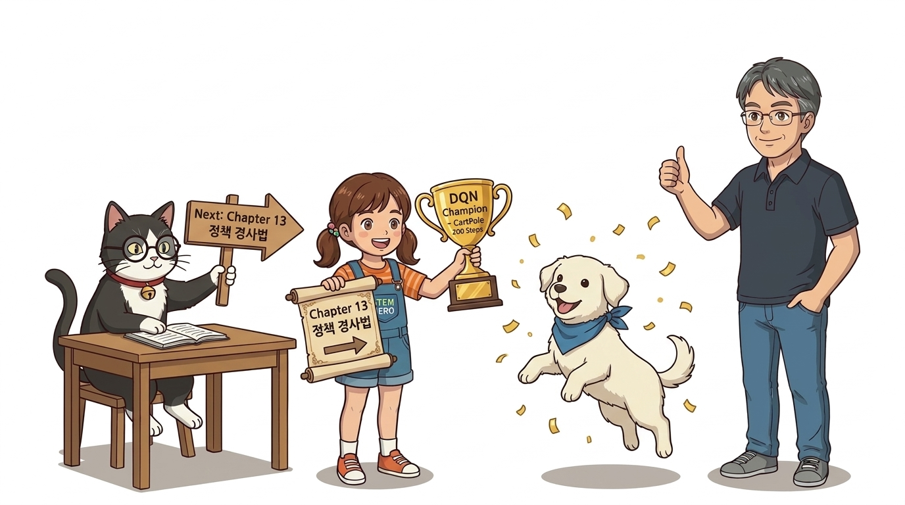
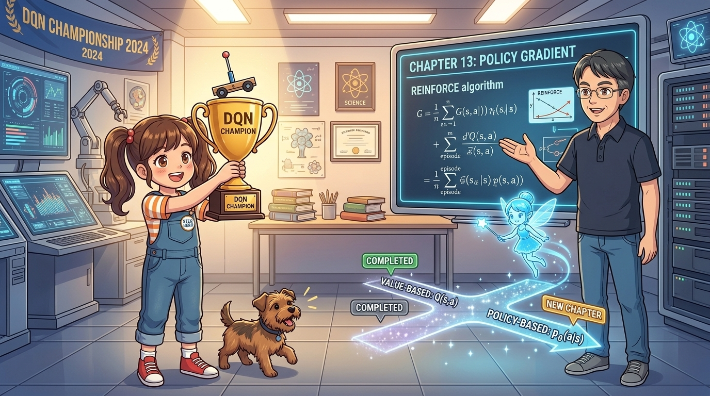
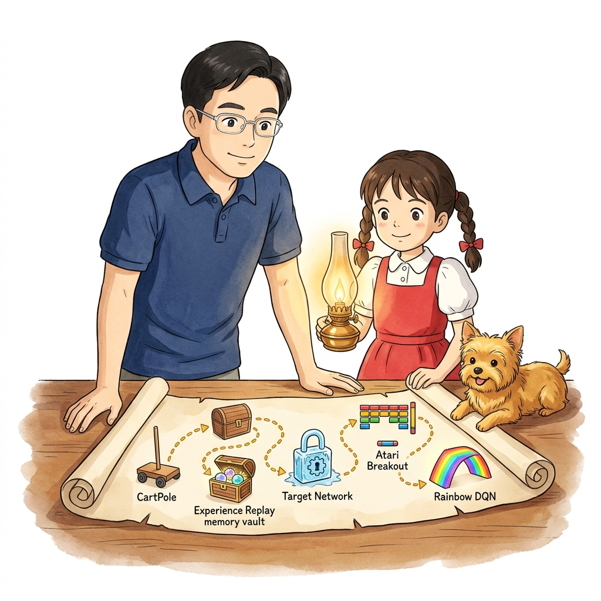
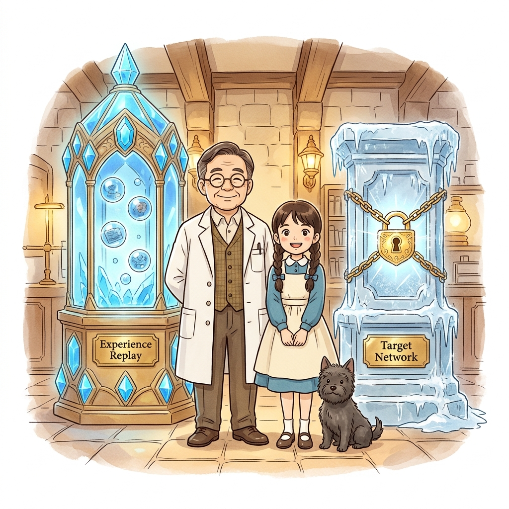
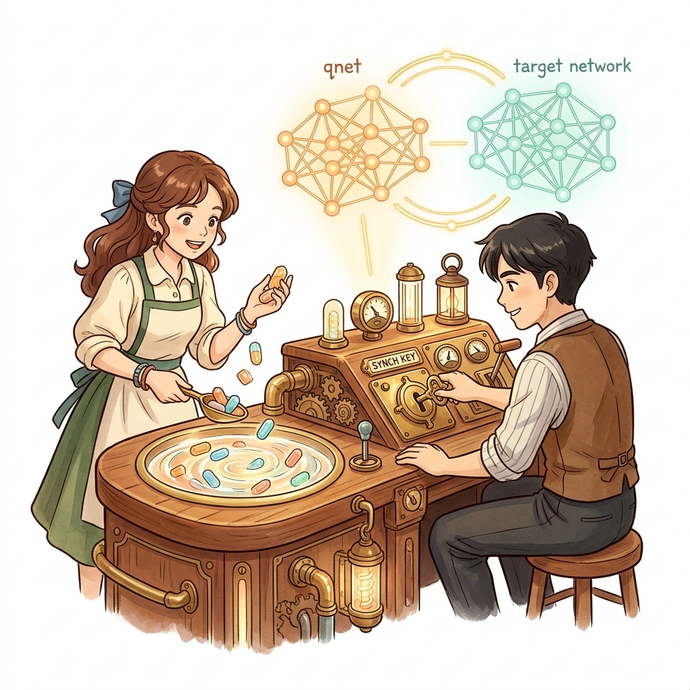
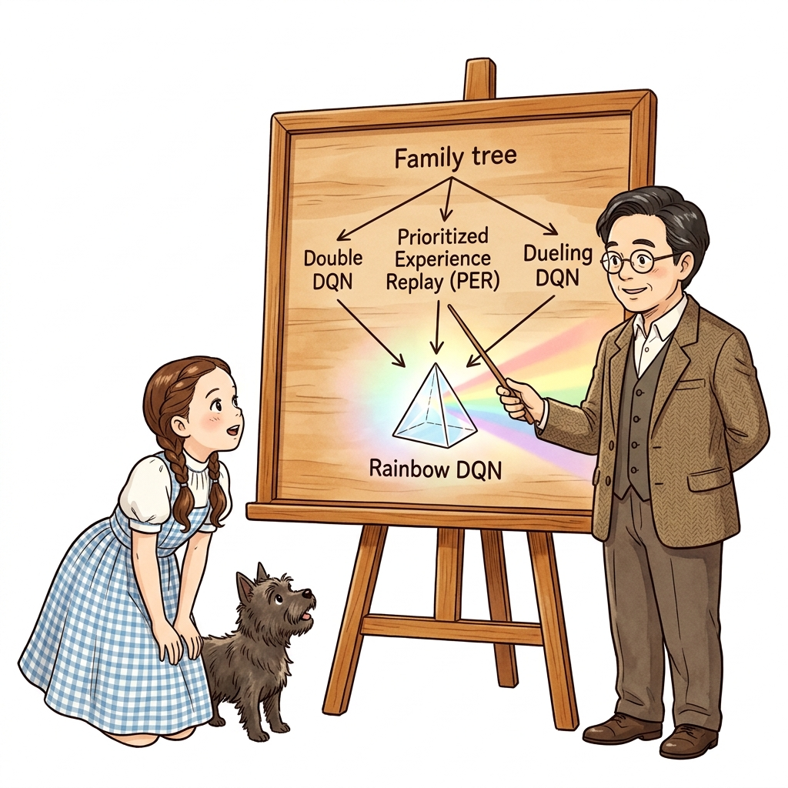
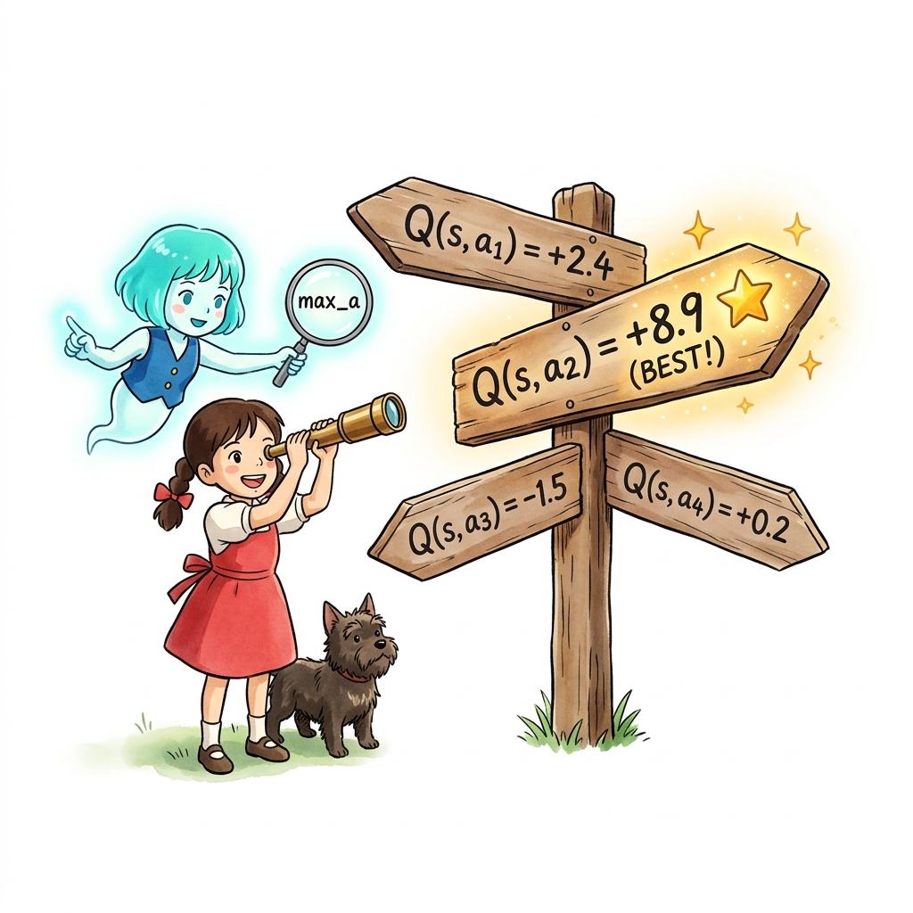
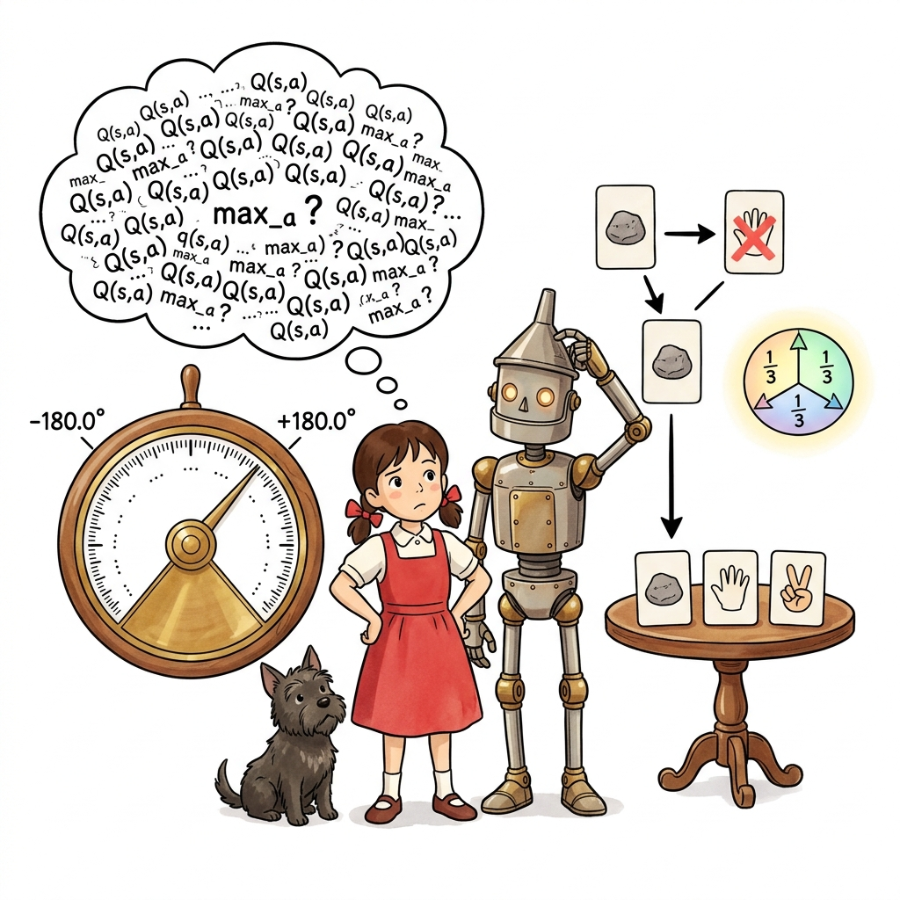
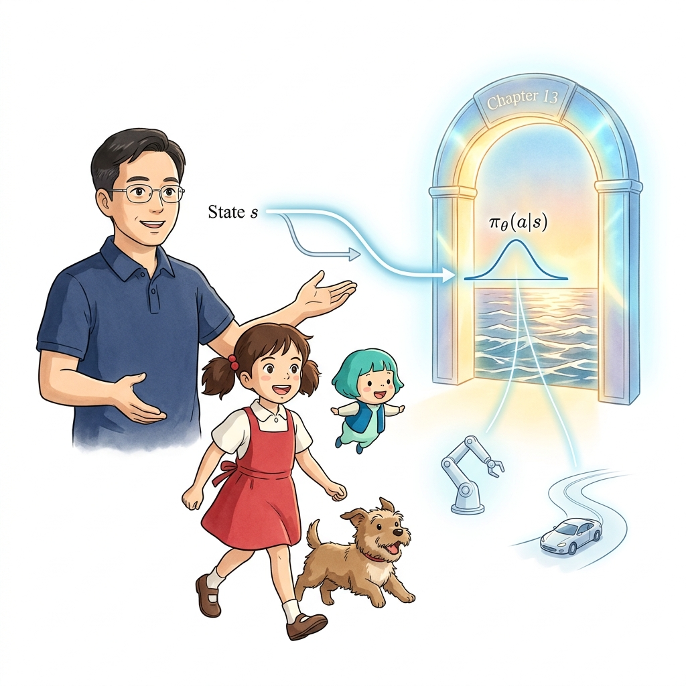
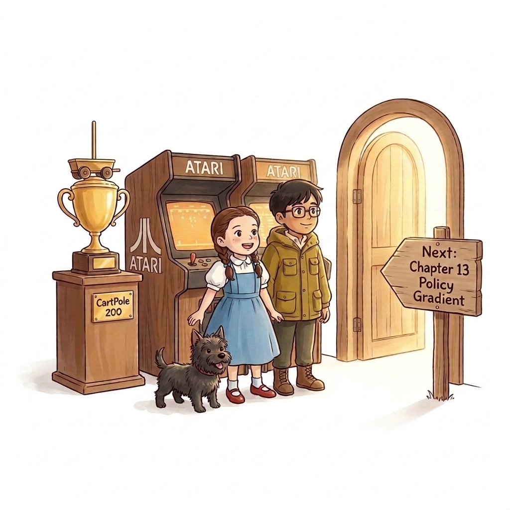

12.5 정리

12장 수료와 정책 경사법 시대로의 위대한 전환

그림 12-5-0 카트폴 200스텝 만점을 달성하고 ‘DQN Champion’ 황금 트로피를 치켜든 도로시와, 가치 기반(Value-Based)의 완성에서 정책 기반(Policy-Based)이라는 새로운 지평으로 나아가는 갈림길을 비추는 지니, 그리고 13장 정책 경사법을 소개하는 교수님과 토토제12장의 위대한 여정을 되돌아보며
이번 12장에서는 현대 심층 강화학습(Deep Reinforcement Learning)의 문을 활짝 열어젖힌 불후의 명작, DQN(Deep Q-Network)의 원리와 구현, 그리고 아타리 게임 확장과 후속 개선 기법들을 총망라해 학습했습니다.

그림 12-5-00-B 카트폴 역진자부터 경험 재생 수조, 목표 신경망 얼음 자물쇠, 아타리 픽셀 정복, Rainbow DQN까지 12장 전체 로드맵을 되돌아보는 이호진 교수님과 도로시, 토토테이블 기반 고전 강화학습이 직면했던 ‘차원의 저주’를 깨부수고, 인공신경망이 거대한 상태 공간을 자유자재로 다룰 수 있게 만든 일등 공신은 바로 경험 재생(Experience Replay)과 목표 신경망(Target Network)이라는 두 개의 거대한 기둥이었습니다.

그림 12-5-01 이호진 교수님과 도로시, 토토가 경험 재생 크리스탈 볼트와 목표 신경망 얼음 자물쇠 기둥 사이에 서서 DQN의 2대 기둥을 총정리하는 모습DQN을 지탱하는 2대 구원투수 총정리
| 핵심 기법 | 해결한 치명적 문제 | 작동 원리 및 물리적 비유 | 핵심 기대 효과 |
|---|---|---|---|
| 경험 재생 (Experience Replay) |
시간적 상관관계(Temporal Correlation)와 $i.i.d.$ 가정 붕괴, 데이터 낭비 | 튜플 $(s, a, r, s’)$를 대용량 버퍼에 저장하고 무작위 복원 추출 (황금 가위와 크리스탈 수조) | 샘플 간 상관관계 파괴, 데이터 효율성 극대화, 지도학습 미니배치 적용 가능 |
| 목표 신경망 (Target Network) |
도망가는 과녁(Moving Target)과 가치 추정치 공진 발산 | 원본 신경망 $\theta$와 별도로 TD 목표 계산 전용 $\theta’$를 복사하여 얼려둠 (얼음 자물쇠) | 벨만 타깃 고정, 부트스트래핑 자가 증폭 차단, 경사하강법 수렴 안정성 확보 |

그림 12-5-02 도로시가 무작위 캡슐 샘플링으로 상관관계를 깨고 지니가 동기화 열쇠로 두 신경망을 주기적으로 정렬하는 듀얼 안정화 메커니즘실전에서 검증한 카트폴 DQN의 기적
12.2절 실습(step03_dqn_cartpole.py)을 통해 우리는 순수 넘파이와 Gym만으로 완전 자립형 DQN 에이전트를 직접 구현하고 검증했습니다:
- 초기 무작위 행동: 10~14스텝 만에 맥없이 쓰러지던 카트폴
- 250 에피소드 학습 후: 탐욕 정책($\epsilon = 0$) 테스트에서 무려 114스텝 연속 균형 유지 달성! (8배 이상의 비약적 도약)
- 단 2.9초 만에 에이전트 스스로 봉의 각도와 카트의 속도를 읽고 중심을 잡아내는 인공지능의 경이로운 자기 진화를 두 눈으로 목격했습니다.
픽셀에서 지능으로: 아타리 퐁(Pong)의 교훈
12.3절에서는 단순한 수치 벡터를 넘어 10만 개가 넘는 컬러 픽셀이 쏟아지는 아타리 환경을 공략하는 딥마인드의 공학적 통찰을 배웠습니다:
- POMDP $\rightarrow$ MDP 변환: 정지 화면 한 장으로는 공의 비행 방향과 속도를 알 수 없는 한계를 연속 4개 프레임 스태킹(Frame Stacking)으로 극복했습니다.
- 4단계 전처리 파이프라인: 자르기(Crop) $\rightarrow$ 회색조(Grayscale) $\rightarrow$ $84 \times 84$ 축소 $\rightarrow$ $[0, 1]$ 정규화를 통해 데이터양을 $90\%$ 이상 압축했습니다.
-
합성곱 신경망(CNN): 공간 평행이동 불변성과 가중치 공유를 통해 픽셀 화면에서 패들과 공의 기하학적 특징 맵을 정확히 추출했습니다.
-
학습 공학 3대 묘수: GPU 텐서 병렬화, $\epsilon$-선형 감쇠($1.0 \rightarrow 0.1$), 보상 클리핑($[-1, 0, +1]$)으로 수십 종의 게임에 범용 적용 가능한 프레임워크를 확립했습니다.
DQN의 진화: 3대 확장과 무지개빛 Rainbow
12.4절에서는 초기 DQN의 수학적·구조적 한계를 극복한 3대 확장 기법을 탐구했습니다:
| 확장 알고리즘 | 극복한 본질적 결함 | 핵심 해법 및 메커니즘 | 실전 효과 | ||
|---|---|---|---|---|---|
| Double DQN | $\max$ 연산자의 가치 과대평가(Overestimation Bias) 거품 | 행동 선택($\theta$)과 가치 평가($\theta’$)의 디커플링 분리 | Q-값 거품 제거 및 참값 정밀 추적 | ||
| 우선순위 경험 재생 (PER) |
균등 무작위 추출($1/N$)로 인한 학습 시간 낭비 | TD 오차 절댓값 $ | \delta_t | $에 비례한 오답 노트식 룰렛 샘플링 | 취약한 핵심 경험 집중 복습, 수렴 속도 2~3배 가속 |
| Dueling DQN | 행동과 무관한 상태에서도 모든 행동을 다 해봐야 하는 낭비 | 네트워크를 상태 가치 $V(s)$와 어드밴티지 $A(s, a)$로 Y자 분기 | $V(s)$ 갱신 하나로 모든 행동 Q-값 일괄 학습 | ||
| Rainbow DQN | 개별 기법들의 파편화 | Double DQN + PER + Dueling + Multi-step + C51 + Noisy Net 통합 | 아타리 57개 전 게임 신기록 석권 |

그림 12-5-03 이호진 교수님이 원목 보드에서 Double DQN, 우선순위 경험 재생(PER), Dueling DQN이 무지개빛 Rainbow DQN으로 수렴하는 발전 계보를 설명하는 장면가치 기반(Value-Based)의 한계와 새로운 질문
지금까지 우리가 12장에 걸쳐 탐구한 모든 알고리즘(Q-러닝, SARSA, DQN)은 하나의 공통된 철학을 공유하고 있습니다:
“가치 함수 $Q(s, a)$를 먼저 정확하게 근사하고, 거기서 가장 큰 값을 주는 행동을 골라내자($\max_a Q$)!”
이를 ‘가치 기반(Value-Based) 강화학습’이라고 부릅니다.

그림 12-5-02-B 여러 갈래 행동 길목에서 가장 가치가 높은 경로(max_a Q)를 찾아 최적의 결정을 내리는 가치 기반 강화학습의 기본 철학하지만 가치 기반 방식은 현실의 더 복잡한 문제로 나아갈 때 치명적인 벽에 부딪힙니다:
- 연속 행동 공간(Continuous Actions)의 불가능성:
자율주행차의 핸들 조향각($-30.5^\circ$)이나 로봇 팔의 모터 토크($2.35 \, \text{N}\cdot\text{m}$)처럼 행동이 무한히 연속적인 실수일 때, 수십억 개의 실수 후보 중에서 $\max_a Q(s, a)$를 찾아내는 것은 불가능합니다! - 확률적 최적 정책(Stochastic Policy) 표현의 한계:
가위바위보나 바둑, 포커처럼 상대가 나를 간파하지 못하도록 행동을 확률적으로 섞어야 하는 게임에서 $\epsilon$-탐욕 정책은 너무나 거칠고 부자연스럽습니다.

그림 12-5-02-C 무한한 연속 조향각 다이얼 앞에서의 max 연산 불가능성과, 가위바위보 확률 게임에서 드러나는 가치 기반(Value-Based) 방식의 구조적 한계13장 예고: 정책 경사법(Policy Gradient)의 시대로!
그렇다면, 복잡하게 Q-값을 우회해서 거칠 필요 없이 “행동을 선택하는 신경망(정책 $\pi_\theta(a \mid s)$) 자체를 직접 경사상승법으로 최적화”할 수는 없을까요?

그림 12-5-03-B 우회로 없이 신경망이 상태 s를 받아 행동 확률 π_θ(a|s)를 곧바로 출력하는 13장 정책 경사법(Policy Gradient)의 새로운 지평- 가치 함수를 거치지 않고 신경망이 곧바로 확률적 행동 분포를 출력합니다.
- 행동이 연속적인 실수라도 평균($\mu$)과 표준편차($\sigma$)를 출력하는 가우시안 신경망으로 손쉽게 제어할 수 있습니다.
우리는 이제 가치 기반의 둥지를 떠나, 현대 알파고(AlphaGo)와 최신 로봇 공학의 심장인 제13장 「정책 경사법(Policy Gradient)」의 광활한 바다로 힘차게 돛을 올립니다!

그림 12-5-04 도로시와 토토, 지니가 카트폴 200 트로피와 아타리 아케이드 캐비닛을 뒤로하고 13장 정책 경사법(Policy Gradient)을 향해 문을 나서는 출항